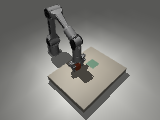

Native capture · Local engineering preview
Native PiPER action capture: images, measurements and issued commands
Keep the image. Preserve the action. Measure the response.
Two identical 1,000-interval captures · two-step unknown prefix · tracker missing, training refused
Inspect the recorded camera and actuator evidence ↗ · Source & history · Download Markdown
Study abstract and scope
Abstract
A native capture preview pairs genuine 160×120 RGB and metric-depth arrays with measured arm/finger state, causal authored decisions, issued references and final native controls. Two 20-second repeats of one fixed synthetic start match all 1,001 frame pairs and measured motion; a declared interruption retains two complete intervals with an unknown outcome. Independent decoding and byte readback cover all 2,005 registered camera observations. Four object-tracker channels remain missing, so strict training export refuses. Thirty-seven focused tests and a fresh installed-wheel native smoke pass. Depth precision, corrective demonstration quality, hard real-time performance, learned transfer and hardware qualification remain unproven.
DVIDIA's native PiPER capture preview connects rendered RGB-D observations to measured joints and explicit actuator commands. Two 20-second runs preserve 1,000 complete control intervals each. All 1,001 paired RGB/depth frames, applied controls and measured motion match exactly between those runs. A declared interruption retains two complete intervals and an unknown outcome. This establishes repeatable collection for one authored simulator trajectory. It does not establish a newly learned skill.
The missing link between footage and motor learning
An ordinary video shows the consequences of movement. It usually omits the motor command, measured gripper response, camera calibration and time at which each observation became available. A language description cannot fill those channels reliably.
The first capture tool preserves that evidence where we can measure it: inside native MuJoCo simulation. Each 20 ms boundary records the before-observation, authored decision, requested and issued targets, final ramped reference, actual native actuator controls, and after-observation. Native physics advances at 1 ms. The seven commands remain six radian arm references and one finger-slide reference in metres. The two measured, signed finger positions and velocities remain distinct from that command.
The controller still uses privileged native object and contact state. Its diagnostic inputs live outside the primary camera/encoder observations. No operator corrections were collected and no model was fitted.
Actual pixels with an explicit clock
Each boundary includes a real 160×120 RGB PNG and an aligned float32 depth array in metres along the camera's optical forward axis. Intrinsics, optical axes, pixel-centre convention and camera-to-base transformation are explicit. Measurements use a shared simulation clock; the simulator pauses during rendering. These are instantaneous synthetic exposures, not measurements of physical camera delivery latency.
The four object-pose and uncertainty channels remain missing/null. Rendering a scene does not implement an object tracker, and native object truth cannot be silently renamed as a visual estimate. Strict learning-target export refuses the full captures for missing evidence and the partial recording for its interrupted status. This is a requirement of the present action-learning input contract, not a claim that every possible robotics policy must use an explicit pose tracker.

The figure preserves the original low-resolution RGB frame. It is recorded simulator output, not a generated illustration.
A full recording, a repeat and an interruption
The engineering protocol scheduled two identical 20-second captures from one fixed synthetic start and a short interrupted capture. Independent readback decoded every registered RGB image and depth array, checked byte identities and shapes, and checked causal camera boundaries. Both full runs contain 1,000 control intervals and 1,001 camera observations; the interrupted run contains two intervals and three observations. All missing tracker values remain explicit.
The two full runs have identical issued commands, final applied controls, measured joint/finger motion and 1,001/1,001 RGB/depth frame pairs. They belong to the same source group. Repeated frames and an identical trajectory are not additional independent training scenarios. This comparison is separate from the stricter data-contract replay checker, which correctly refuses missing tracker channels.
The frozen native task scorer reports successful placement in both full runs with no native solver warnings. The recording-level task result remains unverified. These repeated authored-controller diagnostics are not a learned success rate, held-out test, physical experiment or independently qualified corrective demonstration.
The interrupted capture stops before its third action, retains two complete transitions and marks its outcome unknown. Setup failures and unsealed directories are refused. Development also retained one sandbox graphics refusal and a five-interval smoke; they are listed separately rather than pooled into the registered results. A hard termination can leave an unsealed directory, so capture is not a power-loss-safe service.
Speed and accuracy have separate limits
Acquisition plus recording write took 13.516 and 13.298 seconds for the two 20-second simulated captures on a shared macOS arm64 host. That timing excludes final receipt and integrity sealing. Eleven and six of their 1,000 measured control boundaries exceeded 20 ms; maxima were 82.8 and 100.3 ms. The simulator pauses for acquisition. These measurements do not establish a hard real-time controller or minimum hardware requirements.
The CGL renderer reported: “depth accuracy will be limited.” The complete warning is preserved with the raw captures. Depth values were finite and byte-consistent; depth accuracy, physical calibration and tracker quality remain unverified. The native rigid block, synthetic contact and fixed camera do not establish shoe deformation or real-world fidelity.
Download and build the next learner
The separate 0.1.3.dev1 native preview adds dvidia-piper-capture run and inspect. Its installed-wheel smoke runs outside the source checkout with isolated Python, verifies five genuine native intervals and 12 frame files, and uses previously verified local robot assets. All 37 focused tests pass, including 27 recorder and 10 native-capture tests. The stable 0.1.2 data-only SDK remains a separate release.
Download the native preview and complete evidence. Read the capture guide. Inspect the public evidence dataset.
Public download readback verified all four GitHub release assets and all 23 dataset files. The live Space adds 27 compact viewer files with forced anonymous byte verification. The Hub appended two exact path-scoped LFS rules for its MP4s; all preceding attribute bytes and the other 4,121 existing Space objects remain preserved. The stopped publication intents and the disclosed server deviation are retained in the publication proofs. Browser checks cover playback, timeline scrubbing and the interrupted unknown prefix; they do not certify depth accuracy or physical control.
The next experiment needs a frozen camera estimator with measured errors and reviewed corrective action segments. We can then fit and compare a small action policy on genuinely held-out starting groups. Uploading arbitrary human videos, transferring to another arm and reliably executing on hardware remain open.